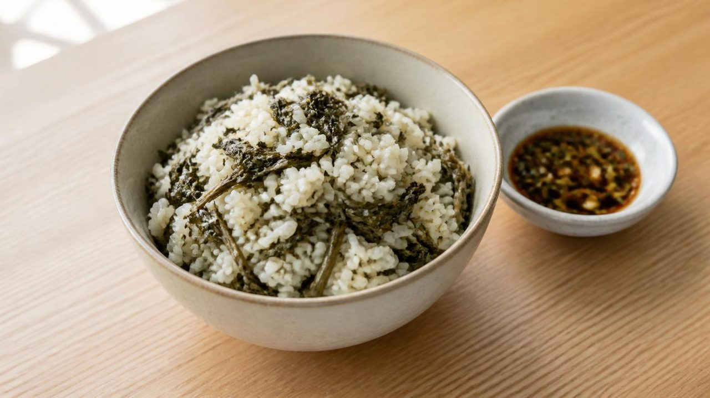
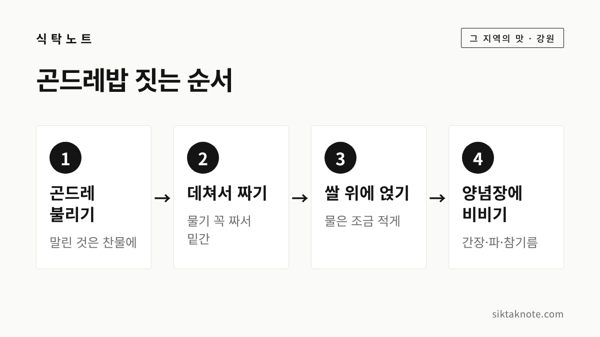

정선 곤드레밥 이야기 — 보릿고개를 넘게 해 준 산나물 한 그릇

3줄 요약
- 곤드레는 국화과 여러해살이풀인 고려엉겅퀴의 어린잎으로, 정선과 평창의 특산물로 알려져 있습니다.
- 쌀이 귀하던 시절 곤드레에 곡식을 조금 섞어 죽을 쑤어 먹던 데서 지금의 곤드레밥이 나왔다고 해요.
- 정선 오일장은 끝자리가 2와 7인 날 열리고, 장터에서 곤드레밥을 맛볼 수 있습니다.
곤드레는 고려엉겅퀴예요
곤드레라는 이름이 귀엽게 들리는데요. 정식 이름은 고려엉겅퀴로, 국화과의 여러해살이풀입니다. 산림청 국립산림과학원 자료에는 강원도 정선과 평창의 특산물로 유명하고, 보통 4~6월에 채취한다고 나와 있습니다.
이름의 유래도 재미있습니다. 바람에 흔들리는 모습이 술에 취한 사람 같아서 '곤드레만드레'에서 이름이 왔다는 이야기가 전해지는데요. 이건 신문 보도에서 소개된 이야기라, 정설이라기보다는 그렇게 알려져 있다는 정도로 들어 주시면 좋겠습니다.
다른 산나물에 비해 특유의 향이 거의 없다는 것도 곤드레의 특징입니다. 그래서 밥에 넣어도 쌀맛을 덮지 않고 순하게 어우러지죠.
밥으로만 먹는 나물도 아닙니다. 국립산림과학원 자료에는 데친 곤드레를 무침, 생선조림, 국거리, 튀김, 묵나물 등으로 두루 쓰고, 냉동해 두면 한 해 내내 이용할 수 있다고 나와 있어요. 봄에 넉넉히 데쳐 얼려 두면 겨울에도 곤드레밥을 지을 수 있습니다.

쌀 대신 나물로 배를 채우던 시절
정선은 산이 많아 논농사가 쉽지 않은 고장인데요. 예전에는 쌀이 귀해서, 산에서 나는 나물로 허기를 달래는 일이 흔했다고 합니다. 봄이면 지난해 곡식은 떨어지고 보리는 아직 여물지 않은 보릿고개가 찾아왔죠.
국립산림과학원 자료는 곤드레를 "보릿고개 시절 곤드레 나물죽을 해서 구황음식으로 먹었던" 산채로 소개합니다. 처음에는 곤드레에 쌀을 조금 섞어 죽을 끓여 먹다가, 나중에 쌀 위에 곤드레를 얹어 밥을 짓는 지금의 곤드레밥이 생겨났다고 보도됐어요. 나물로 밥의 양을 늘려 먹던 지혜가 오늘날 별미가 된 셈입니다.

정선아리랑 속 곤드레
정선아리랑에도 곤드레가 등장합니다. 한 신문 칼럼은 정선아리랑의 한 구절을 이렇게 소개했는데요.
한 치 뒷산에 곤드레 딱주기 님의 맛만 같으면 (후략)
곤드레, 딱주기 같은 산나물이 님의 맛만 같다면 그것만 뜯어 먹어도 봄을 살아 넘길 수 있다는 뜻으로 이어집니다. 같은 칼럼은 이 가사가 춘궁기를 버티는 데 곤드레가 얼마나 중요했는지를 보여 준다고 풀이했어요. 정선아리랑은 지역과 부르는 사람마다 가사가 조금씩 달라서, 이 구절도 여러 형태로 전해진다는 점은 감안해 주세요.

집에서 곤드레밥 짓는 법

마트나 시장에서는 말린 곤드레(건곤드레)나 삶아서 얼린 곤드레를 쉽게 구할 수 있습니다. 덕분에 지금은 계절과 상관없이 곤드레밥을 지을 수 있죠.
- 불리기: 말린 곤드레는 찬물에 담가 30분에서 1시간쯤 불려요.
- 데치고 짜기: 10분쯤 삶은 뒤 찬물에 헹궈 물기를 꼭 짭니다. 먹기 좋게 썰어서 들기름이나 국간장으로 살짝 밑간해 두면 좋아요.
- 밥 짓기: 씻은 쌀 위에 곤드레를 올려 밥을 짓습니다. 나물에서 물이 나오니 물은 평소보다 조금 적게 잡는 게 좋습니다.
- 섞기: 밥이 다 되면 곤드레와 밥을 고루 섞어 그릇에 담아요.
불리고 삶는 시간은 곤드레가 얼마나 말랐는지에 따라 달라지는데요. 줄기를 눌러 보아 부드러워졌는지 확인하시면 됩니다. 말린 나물을 불리고 우리는 요령은 나물 쓴맛·아린맛 빼는 법에서도 다뤘어요.

양념장 하나로 맛이 살아납니다
곤드레밥은 양념장에 비벼 먹는 밥인데요. 언론에 소개된 기본 양념장은 이렇습니다.
| 재료 | 양 |
|---|---|
| 간장 | 3큰술 |
| 다진 파 | 1큰술 |
| 다진 마늘 | 1작은술 |
| 참기름 | 1큰술 |
여기에 깨를 뿌리거나 고추를 다져 넣어도 됩니다. 곤드레의 은은한 맛을 살리려고 국간장과 진간장을 섞어 쓰는 식당도 있다고 하고, 된장 양념을 함께 내는 곳도 있다고 해요. 집집마다 입맛대로 조절하시면 됩니다.

정선 오일장에서 만나는 곤드레밥
곤드레밥을 제대로 맛보고 싶다면 정선 오일장이 좋습니다. 정선읍 정선아리랑시장에서 끝자리가 2와 7인 날, 그러니까 매달 2·7·12·17·22·27일에 장이 서요. 1999년 정선오일장 관광열차(지금의 정선아리랑열차)가 다니면서 다시 활기를 찾았다고 알려져 있습니다.
장날에는 곤드레밥뿐 아니라 콧등치기국수, 올챙이국수, 감자옹심이 같은 정선 음식을 한자리에서 만날 수 있는데요. 봄에는 곰취나 참나물 같은 산나물도 많이 나온다고 합니다. 장날이 아닐 때도 상설시장은 열려 있어요.
- 장날: 끝자리 2·7일
- 주소: 강원특별자치도 정선군 정선읍 5일장길 40
- 문의: 033-563-6200
운영 시간이나 장날 행사는 바뀔 수 있으니, 가시기 전에 한 번 확인해 보시는 게 좋겠습니다.
가난한 밥상이 남긴 별미
곤드레밥은 배고픈 시절을 넘기려고 먹던 음식이었는데요. 지금은 전국 어디서나 찾는 별미가 되었습니다. 쌀이 귀했던 산골에서 감자로 떡을 빚었던 감자떡 이야기와도 닮은 데가 있죠. 정선에 가실 일이 있다면 장날에 맞춰 곤드레밥 한 그릇 드셔 보시면 좋겠습니다.